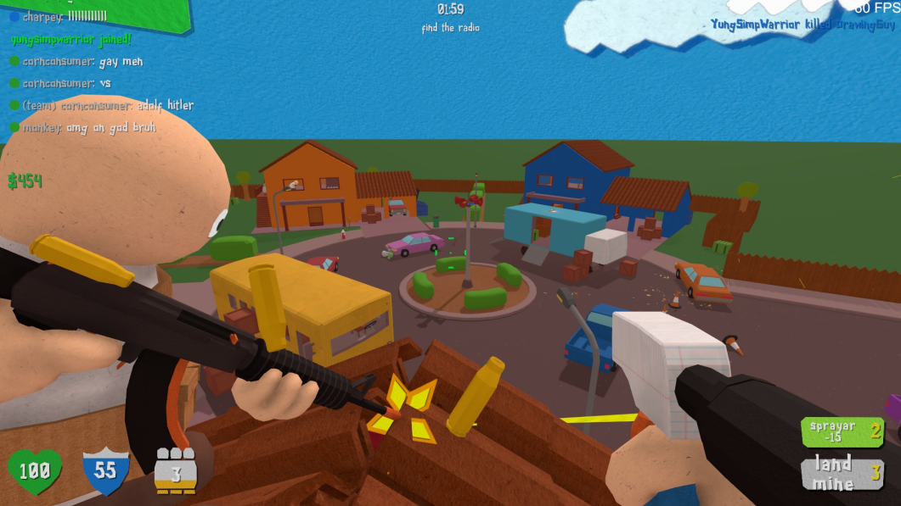
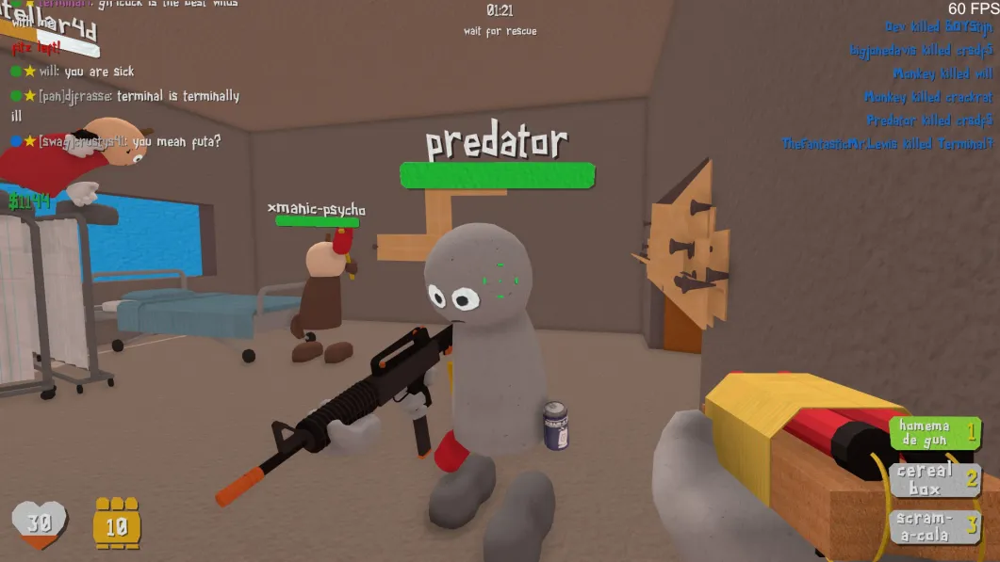

Dread Signal is a singleplayer story mode conceptualization of the Scram series. It was the first ever version of Scram. Development started in 2014 and was scrapped in 2015.
The basic storyline is where you wake up as a character named 'Bradley' and later make new friends throughout the story. The mutant virus was caused by an alien invasion and the goal is to progress through the story.